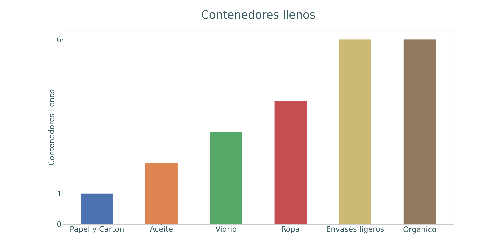

<body>
    <div style="position: relative; width: 100%; height: 90%; overflow-y: auto;">
        <div>
            
        </div>

        <div class="scrollable-container">
            <div *ngFor="let incidencia of incidenciasData" style="height: 20%; width: 100%; background-color: aliceblue;">
              <div>{{ incidencia.calle }} - {{ incidencia.porcentaje }}%</div>
            </div>
          </div>
          
          
    
       
    
        <div class="contenedor">
            <div class="fila">
                <div class="rectangulo">
                    <h1 class="number" id="1"></h1>
                    <p class="tipo">PETICIÓN</p>

                </div>
                <div class="rectangulo">
                    <h1 class="number" id="2"></h1>
                    <p class="tipo">LLENO</p>

                </div>
            </div>
            <div class="fila">
                <div class="rectangulo">
                    <h1 class="number" id="3"></h1>
                    <p class="tipo">RECLAMACIÓN</p>

                </div>
                <div class="rectangulo">
                    <h1 class="number" id="4"></h1>
                    <p class="tipo">CONSULTA</p>

                </div>
            </div>
        </div>
    </div>
    


  <footer class="footer">
    <div class="footer-buttons">
        <button class="mis-incidencias" (click)="goToIncPage();" >
            
        </button>
        
        <button class="reportes-mapa" (click)="goToStatsPage();">
            
        </button>

        
        <button class="mapa_calor" (click)="goToMapPage();">
            
        </button>
        
        <button class="icono-usuario"(click)="goToProfPage();">
            
        </button>
        
    </div>
</footer>


</body>